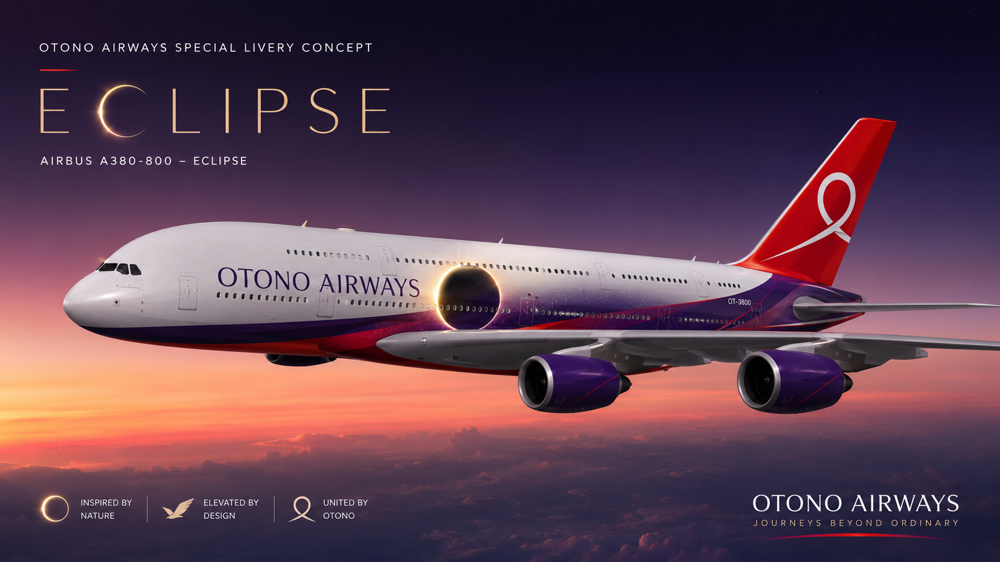
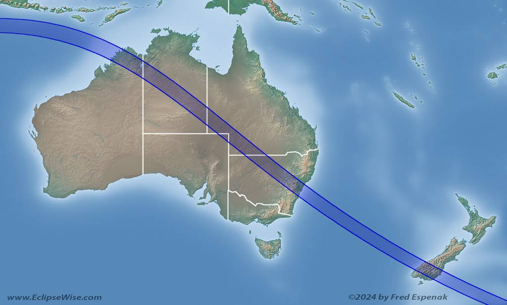
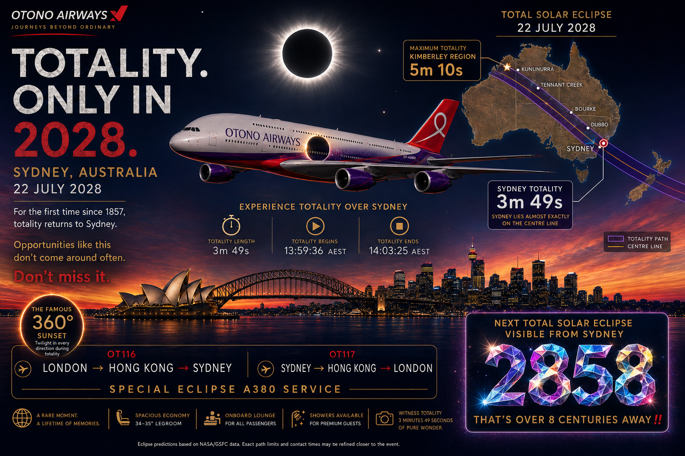
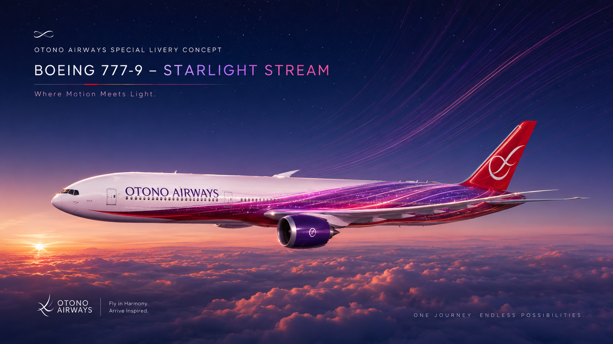
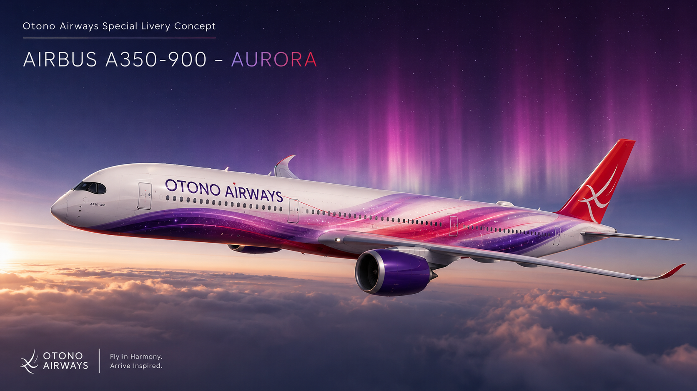

The Moon will completely block the Sun over Sydney. The lunar shadow will cross Australia before reaching one of the world's most recognisable cities.

SydneyEclipse enters event mode at 12:40 Sydney time, 40 seconds before first contact.
The first bite appears at the bottom-left. The Moon climbs diagonally across the solar disc, reaches totality, then leaves near the top, slightly to the right.
Sydney isn't where totality lasts longest. In northwestern Australia, the Moon's shadow produces an even longer experience.
Near Kununurra • Western Australia
10:58:08 → 11:03:18
Maximum eclipse: 11:00:43
Sydney is the destination of SydneyEclipse, but it isn't alone. The Moon's shadow crosses a remarkable chain of places from the northwest to Australia's east coast.
The path runs from the Kimberley region across inland Australia and reaches the east coast through the Sydney region.

5m10s maximum → totality corridor → Sydney
MORE TOTAL SOLAR ECLIPSES CROSS AUSTRALIA.
Sydney's 2028 opportunity is different. Miss it, and the wait for another total solar eclipse over the city becomes extraordinary.
WHAT IF YOU MISSED 2028? →SydneyEclipse switches into event mode at 12:40. First contact follows only 40 seconds later.
The original poster that helped establish the visual identity of SydneyEclipse.

Click the poster to view it full-screen.
TOTALITY. ONLY IN 2028.
The A380 remains the signature aircraft of SydneyEclipse and carries the journey from London through Hong Kong to Sydney.
SydneyEclipse is not a fleet website, so the A380 stays dominant. The 777 and A350 appear only as smaller cameos representing the wider Otono Airways fleet.
The aircraft most strongly associated with the Sydney eclipse journey and OT116.
A secondary Otono Airways appearance. It is deliberately smaller than the A380 and is not presented as the eclipse-service aircraft.

A small modern long-haul cameo that fits the astronomy and travel theme without taking attention away from OT116.

Dedicated pages can eventually hold the detailed information while the homepage remains the dramatic overview.
Interactive phases, exact timings and the Moon's unusual diagonal path across the Sun.
EXPLORE →The totality corridor, every featured location and the enormous 5m10s maximum.
EXPLORE →3m49s of totality, the skyline, local timings and Sydney under the lunar shadow.
EXPLORE →The Otono Airways A380 journey from London through Hong Kong to Sydney.
EXPLORE →A dedicated event page that transforms as the eclipse unfolds on 22 July 2028.
LIVE IN 2028 →Missed 2028? Sydney's next central eclipse isn't necessarily another total eclipse...
REVEAL THE ANSWER →